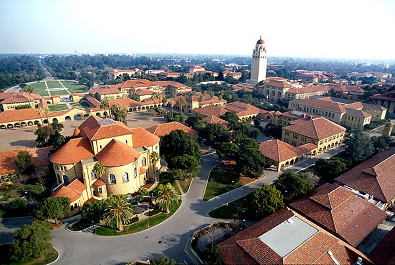

Timeline of Elon Musk. Overview of his life and career. Elon Musk is born on June 28, 1971. He is a South African-born, Canadian-American business magnate, engineer, inventor, and investor.
1971
- June 28 - Born 🇿🇦
- Born on 28th June 1971 in South Africa. Elon Reeve Musk (born June 28, 1971) is a South African-born, Canadian-American business magnate, engineer, inventor and investor.
- He is the CEO and CTO of SpaceX, CEO and product architect of Tesla Motors, and chairman of SolarCity. In December 2016, Musk founded The Boring Company, an infrastructure and tunnel-construction company focused on tunnels specialized for electric vehicles.
1991
- January 12 - Blastar video game 🎮
- Blastar was a game written by Elon Musk in 1984 (at the age of 12). The source code was published in a magazine and he received $500 for it.
- You can play a replica of the Blastar video game here: https://blastar-1984.appspot.com/
1995
- August 16 - University of Pennsylvania
- In 1995 Elon Musk received his Bachelor in Physics and Economics from the University of Pennsylvania.
- September 5 - Moved to California
- In 1995 Elon Musk moved to California and applied for physics at Stanford University. However, he left the program after two days.
- 
- November 1 - Queen University
- Elon Musk was accepted into Queen's University.
1999
- February 16 - Zip2
- Started Zip2, a web software company, with US$28,000 of their father's (Errol Musk) money.

- March 1 - Compaq acquires Zip2
- Musk received 7% or US$22 million from the sale.
2000
- March 14 - Co-founded X.com
- Musk co-founded X.com, an online financial services and e-mail payment company, with US$10 million from the sale of Zip2.
- May 17 - Marriage Justin Musk
- Elon marries Justin in 2000 but separated in 2008, after having six sons.
- October 2 - eBay buys PayPal
- PayPal was acquired by eBay for US$1.5 billion in stock, of which US$165 million was given to Musk.
2002
- June 3 - Space X
- With US$100 million of his early fortune, Musk founded Space Exploration Technologies
2004
- February 10 - Investment Tesla Motors
- Musk led the Series A round of investment in February 2004, joining Tesla's Board of Directors as its Chairman.
2006
- February 10 - Solar City
- Musk provided the initial concept, and financial capital for SolarCity, co-founded by his cousins Lyndon and Peter Rive
2010
- March 6 - Falcon 9
- Musk and President Barack Obama at the Falcon 9 launch site in 2010
2012
- June 12 - Tesla Model S
- Tesla began delivery of its four-door Model S
2002
- June 3 - Space X
- With US$100 million of his early fortune, Musk founded Space Exploration Technologies
2013
- August 12 - Hyperloop
- Musk unveiled a proposal for a new form of transportation between the Greater Los Angeles Area and the San Francisco Bay Area,
2002
- June 3 - Space X
- With US$100 million of his early fortune, Musk founded Space Exploration Technologies
2021
- June 7 - Anonymous
- Anonymous sends a message to Elon Musk after tweeting down the crypto market.
- July 9 at 8:30 AM - DOGE
- While Bitcoin is declining, Elon Musk keeps on tweeting about Dogecoin and pushes the prices up.
BTC & ETH are pursuing a multilayer transaction system, but base layer transaction rate is slow & transaction cost is high.
— Elon Musk (@elonmusk) July 9, 2021
There is merit imo to Doge maximizing base layer transaction rate & minimizing transaction cost with exchanges acting as the de facto secondary layer.